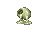
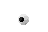

Gland candidate

Spider eye's source shape
Eye of Newt base; Spider eye uses a purple runtime recolor.

Candidate, not installed. Transparent 48×32 canvas; gland and puddle fit 16×18 pixels. Native size and 10× nearest-neighbor view.

Eye of Newt base; Spider eye uses a purple runtime recolor.

Created with built-in imagegen, then deterministic native-size packaging. Generation prompt